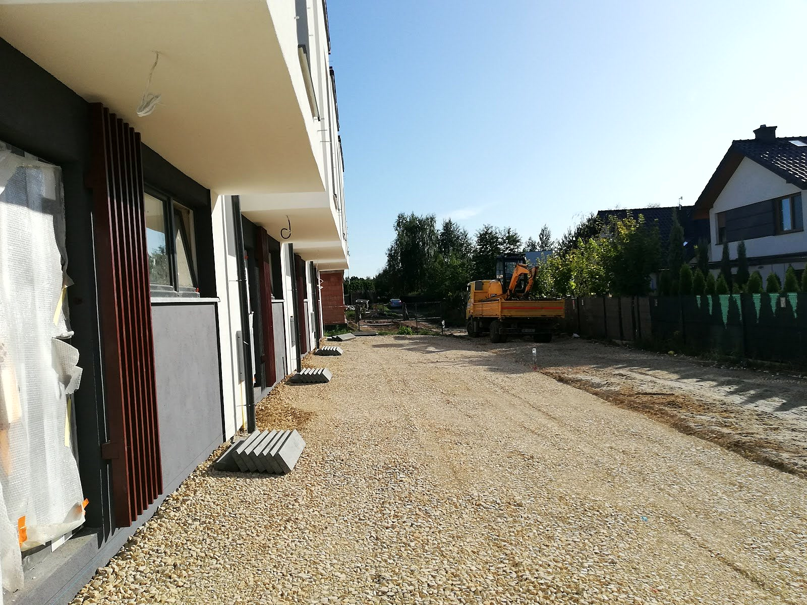
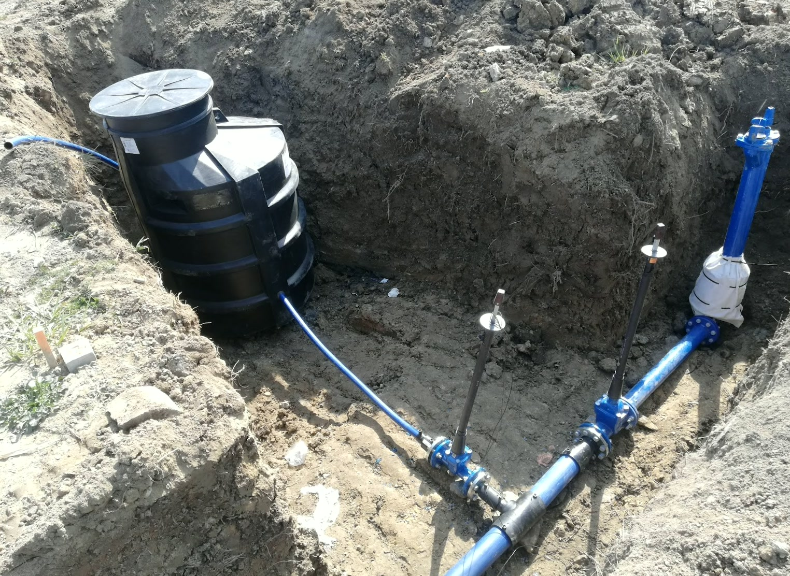
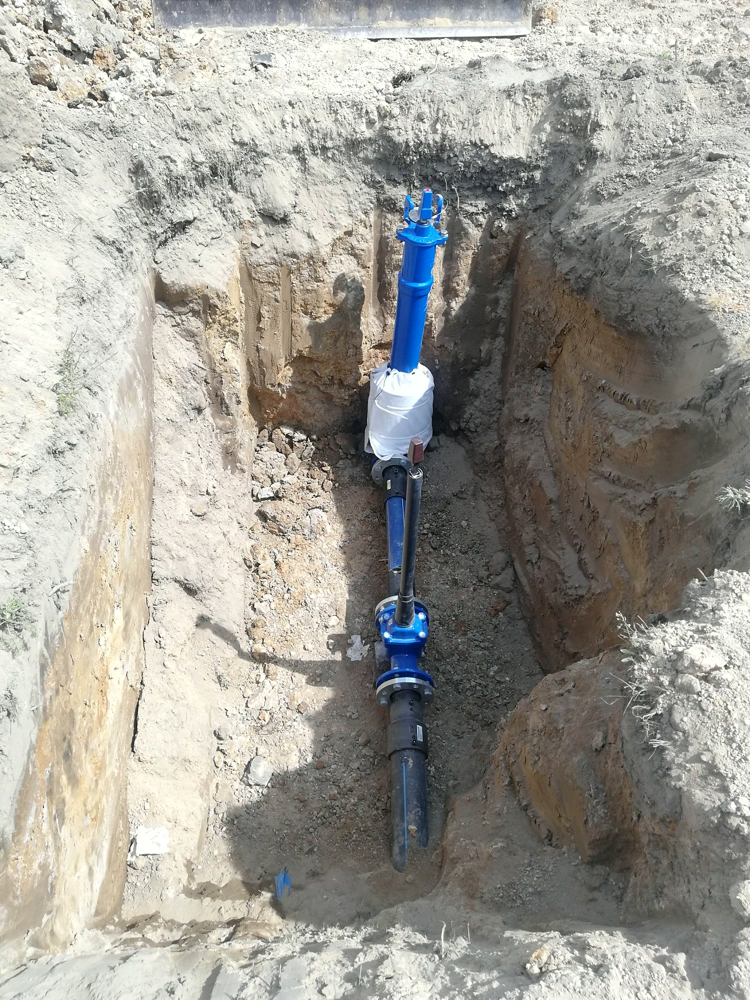
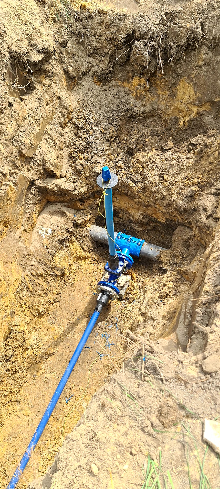
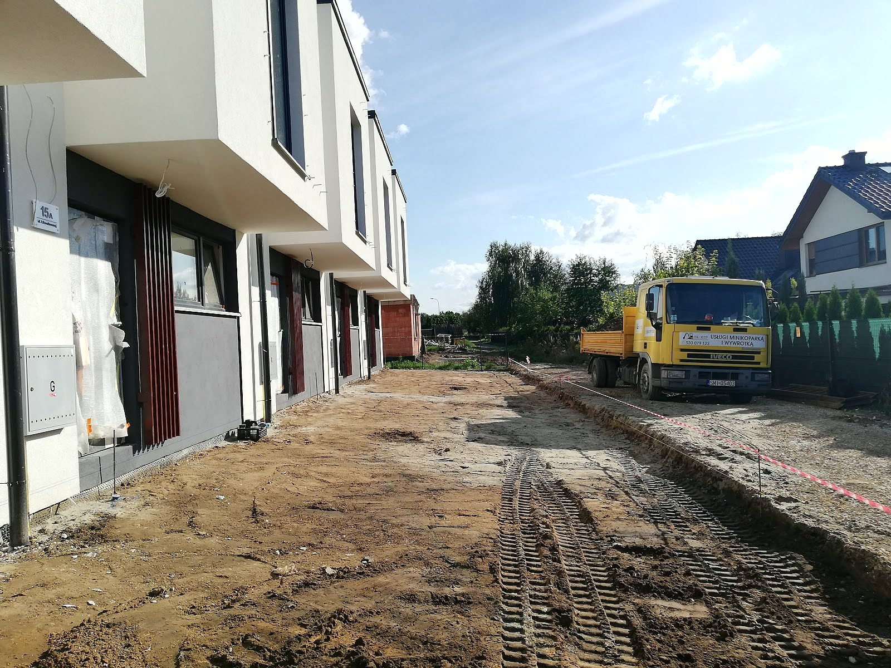
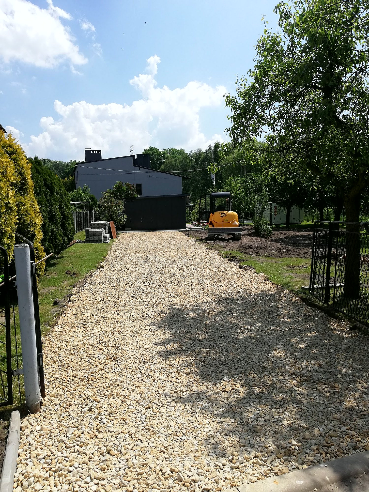
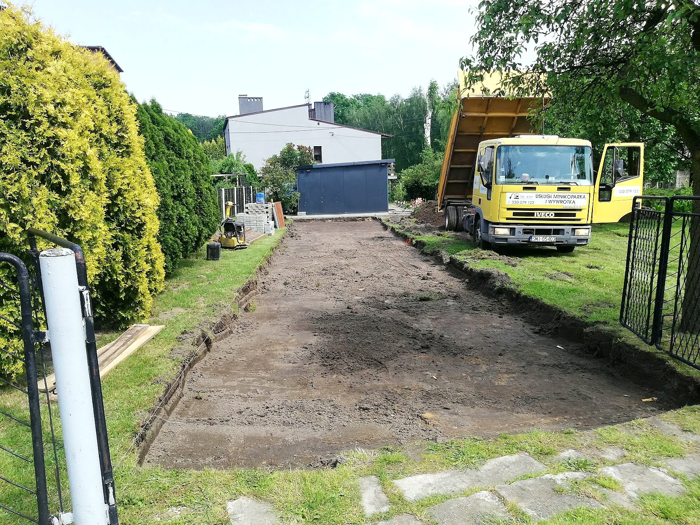

Prace ziemne i przyłącza wod-kan
Minikoparka mieści się między domem a płotem, a wywrotka od razu zabiera urobek albo przywozi kruszywo. Cenę podajemy po rozmowie o tym, co i gdzie trzeba zrobić.

Przyłącza wodno-kanalizacyjne
Wykop od budynku do sieci, ułożenie rur, zasypanie i wyrównanie terenu. Klienci w opiniach chwalą terminowość i ład na posesji po usłudze.

Sieci wodociągowe i kanalizacyjne
Rozbudowa sieci wody i kanalizacji: wykopy pod rurociąg, zasuwy, studzienki i zasypka.

Wykopy, szamba i drenaże
Kopiemy pod fundamenty, szamba, zbiorniki i instalacje. Robimy drenaże i odwodnienia wokół budynku.

Niwelacja terenu
Równamy działkę po budowie, rozplantowujemy ziemię i przygotowujemy teren pod trawnik albo kostkę.

Podbudowy i utwardzenie
Korytowanie i podbudowa z kruszywa pod podjazdy, drogi dojazdowe i place.

Transport wywrotką
Wywóz ziemi i urobku, dowóz piasku, żwiru i kruszywa na budowę.
Która z usług Cię interesuje?
Napisz, co chcesz zrobić - odpowiemy z propozycją i wyceną.